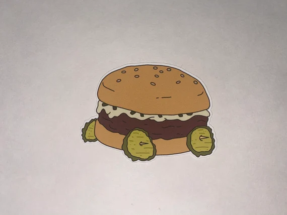

Baby You Can Chive My Car Burger

Uhh, so, yeah...I call this the 'Baby You Can Chive My Car' burger. It's a feta-stuffed burger topped
with diced chives and a creamy sour cream and mustard spread. Comes with fried pickles for wheels, because it's a car...get it? Okay.
Ingredients
- 1/2 cup all-purpose flour
- 2 tablespoons Cajun seasoning
- 1 tablespoon salt
- 1 12 or 16-ounce jar dill pickly chips
- 1 egg
- 1/4 cup milk or buttermilk (optional)
- Canola or vegetable oil, for frying
- 1/2 cup feta cheese, crumbled
- 1 pound ground beef
- 1/2 cup sour cream
- 2 tablespoons Dijon Mustard
- 1/2 cup finely chopped chives
Directions
Make the Pickles
- Combine the flour, Cajun seasoning, and salt in a large bowl. Pat the pickle chips dry
- Beat the egg in a small bowl. Drain the pickle chips, then dip in the egg, then dredge in the flour mixture to coat.
Add the optional milk or buttermilk to your egg if you're having trouble getting the flour to stick to the pickles or
getting an even coat.
- Heat 2 to 3 inches of oil to about 350 degrees Fahrenheit in a large pot over medium-high heat. Fry the pickles in
small batches until golden, transferring fried pickles to paper towels with a slotted spoon. Check your oil temperature
between batches.
Make the Burgers
- Carefully fold the feta into the beef. Form 4 patties, and season both sides lightly with salt and pepper.
- Cook the patties as you normally would.
- Mix the sour cream, mustard, and chopped chives. Spread generously on the top bun.
- Build Your Burger: Bottom bun, burger, top bun with spread. Attach 4 fried pickles with toothpicks to the side of
the bottom bun as if they were wheels.
- Serve while making little car sounds: vroom, vroom! Beep, beep!
Credit goes to the Bob's Burgers Burger Book Recipes for this recipe.
Home